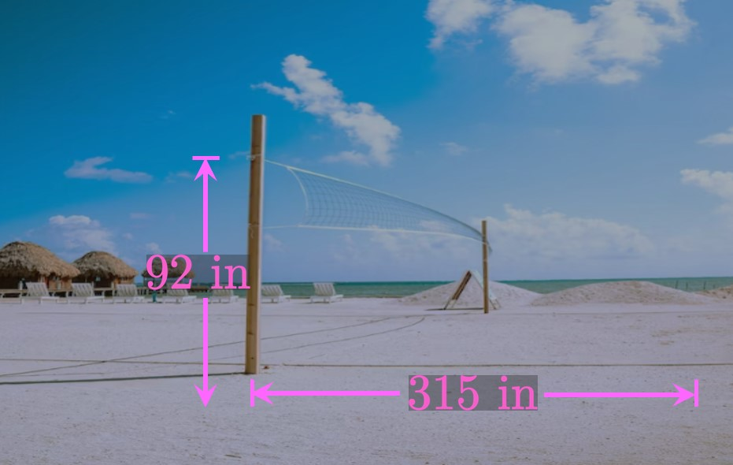

SOLUTIONParametric equations express
the point \((x, y)\) on a graph in terms of a parameter
\(t.\)
These equations enable \(x\) and \(y\) to change independently of each other.
A parametric curve is a curve traced out by parametric equations.
EXERCISE 2
What is eliminating the parameter?
SOLUTIONEliminating the parameter is the process by which
we find a Cartesian equation for the shape of a parametric curve.
In other words, we directly relate \(x\) and \(y\) without using a parameter \(t.\)
EXERCISE 3
Define a cycloid and write parametric equations to model it.
SOLUTION
A cycloid is the shape
traced out by a point on the circumference of a circle.
We regard the parameter as \(\theta,\) the angle
through which the circle's central angle has rotated.
Parametric equations for a cycloid are
\[x = r(\theta - \sin \theta) \lspace y = r(1 - \cos \theta) \pd\]
EXERCISE 4
How do we model a projectile's trajectory?
SOLUTION
An object moving through the air experiences a gravitational force,
which is directed downward and causes an acceleration of magnitude
\(g = 9.8 \undiv{m}{sec}^2\) \(= 32 \undiv{ft}{sec}^2.\)
We model the projectile's motion using an \(xy\)-plane,
where \(y\) is the projectile's height above the ground
and \(x\) is the horizontal distance it has traveled.
We write parametric equations to model the motion along each direction.
If \(t\) is time, \(v_0\) is the projectile's initial speed, and \(\alpha\)
is the angle at which the projectile is launched,
then parametric equations are
\[x = v_0 (\cos \alpha) t \lspace y = y_0 + v_0 (\sin \alpha) t - \tfrac{1}{2} gt^2 \pd\]
EXERCISE 5
For
\[\ds x = 3t \cma y = \cos(t + 2)\]
eliminate the parameter in the given parametric equations.
SOLUTION
In the first parametric equation \((x = 3t),\)
we acquire \(t = x/3.\)
Substituting this expression into the second parametric equation \([y = \cos(t + 2)]\)
gives
\[\boxed{y = \cos \par{\frac{x}{3} + 2}}\]
This curve is the shape traced out by the given parametric functions
\(x = 3t\) and \(y = \cos(t + 2).\)
EXERCISE 6
For
\[\ds x = 6t + 1 \cma y = e^t\]
eliminate the parameter in the given parametric equations.
SOLUTION
In the first parametric equation \((x = 6t + 1),\)
we acquire
\[t = \frac{x - 1}{6} \pd\]
Substituting this expression into the second parametric equation \((y = e^t)\)
provides
\[\boxed{y = e^{(x - 1)/6}}\]
Thus, the curve traced out by \(x = 6t + 1\) and \(y = e^t\)
is represented by \(y = e^{(x - 1)/6}.\)
EXERCISE 7
For
\[\ds x = \sqrt t \cma y = t^2 + 2\]
eliminate the parameter in the given parametric equations.
SOLUTION
From the first parametric equation \((x = \sqrt t \,),\)
we acquire \(t = x^2.\)
Substituting this expression into the second parametric equation \((y = t^2 + 2)\)
provides
\[\boxed{y = x^4 + 2}\]
EXERCISE 8
For
\[\ds x = \cos t \cma y = \sec^2 t\]
eliminate the parameter in the given parametric equations.
SOLUTION
Observe that
\[y = \sec^2 t = \frac{1}{\cos^2 t} = \frac{1}{x^2} \pd\]
Thus, the shape of the parametric curve is \(\boxed{y = 1/x^2}.\)
EXERCISE 9
For
\[\ds x = \ln t \cma y = 8t \scol 1 \lt t \leq e\]
eliminate the parameter in the given parametric equations.
SOLUTION
From the second parametric equation \((y = 8t),\)
we acquire \(t = y/8.\)
Substituting this expression into the first parametric equation \((x = \ln t)\)
gives
\[x = \ln \tfrac{y}{8} \pd\]
When \(t = 1,\) \(y = 8;\) when \(t = e,\) \(y = 8e.\)
Thus, the parametric curve is represented by
\[\boxed{x = \ln \tfrac{y}{8} \cma 8 \lt y \leq 8e} \]
EXERCISE 10
For
\[\ds x = \sin t \cma y = \csc t \scol 0 \lt t \lt \frac{\pi}{2}\]
eliminate the parameter in the given parametric equations.
SOLUTION
We have two methods for solving this problem.
The first (and easiest) way is to recognize that
\[xy = (\sin t)(\csc t) = 1 \pd\]
Thus, a Cartesian representation for the given
parametric curve (over the given interval)
is \(xy = 1,\) or \(\boxed{y = 1/x}.\)
The second method we could employ is to solve for \(t\)
in the first parametric equation \((x = \sin t) \col\)
\[t = \sin^{-1} x \pd\]
Substituting this expression into the second parametric equation \((y = \csc t)\)
gives
\[y = \csc \par{\sin^{-1} x} \pd\]
To simplify this answer, we recognize that in a right triangle of hypotenuse \(1,\) \(\sin^{-1} x\)
is the angle whose opposite side is \(x.\)
Accordingly, the cosecant of this angle is \(1/x\) and so
\[y = \csc \par{\sin^{-1} x} = \frac{1}{x} \pd\]
When \(t = 0,\) \(x = 0;\) when \(t = \pi/2,\) \(x = 1.\)
Hence, this curve takes the shape \(y = 1/x\)
for \(0 \lt x \lt 1.\)
EXERCISE 11
For
\[\ds x = \cot t \cma y = \sin t \scol 0 \lt t \leq \frac{\pi}{2}\]
eliminate the parameter in the given parametric equations.
SOLUTION
We see
\[xy = (\cot t)(\sin t) = \cos t \pd\]
But by the Pythagorean theorem,
\[
\baf
&& \cos t &= \sqrt{1 - \sin^2 t} = \sqrt{1 - y^2} \cma &\nl
\laWord{so} && xy &= \sqrt{1 - y^2} & \nl
\laWord{and} && x &= \frac{\sqrt{1 - y^2}}{y} \pd
\eaf
\]
When \(t = 0,\) \(y = 0;\)
when \(t = \pi/2,\) \(y = 1.\)
Thus, the shape of the parametric curve is given by
\[\boxed{x = \frac{\sqrt{1 - y^2}}{y} \cma 0 \lt y \leq 1}\]
EXERCISE 12
For
\[\ds x = \csc^2 t \cma y = \cot^2 t \scol 0 \lt t \lt \pi\]
eliminate the parameter in the given parametric equations.
SOLUTION
If we use the identity
\[\cot^2 t + 1 = \csc^2 t \cma\]
then we see
\[y + 1 = x \or y = x - 1 \pd\]
Both \(\csc^2 t\) and \(\cot^2 t\) approach \(\infty\) as
\(t \to 0^+\) or as \(t \to \pi^-.\)
And both functions are positive, meaning \(y\) must be positive
and so \(x \gt 1.\)
Our Cartesian equation is therefore
\[\boxed{y = x - 1 \cma x \gt 1}\]
EXERCISE 13
For
\[\ds x = 2t \cma y = 4t \scol 0 \leq t \leq 2\]
a particle travels according to the given parametric equations.
Describe the particle's motion.
SOLUTION
To find the shape of the path, we eliminate the parameter.
Let's solve for \(t\) in the first parametric equation \((x = 2t);\)
we attain \(t = x/2,\)
which we substitute into the second parametric equation \((y = 4t)\)
to obtain
\[y = 4 \par{\frac{x}{2}} = 2x \pd\]
In addition, when \(t = 0\) the particle is at \((0, 0);\)
when \(t = 2\) the particle is at \((4, 8).\)
Hence, the particle moves along the line \(y = 2x\)
beginning at the origin and ending at the point \((4, 8).\)
EXERCISE 14
For
\[\ds x = t - 3 \cma y = \cos t \scol 0 \leq t \leq \pi\]
a particle travels according to the given parametric equations.
Describe the particle's motion.
SOLUTION
We eliminate the parameter to determine the path's shape.
The easiest procedure is as follows:
Solving for \(t\) in the first parametric equation \((x = t - 3)\)
gives \(t = x + 3,\)
which we substitute into the second parametric equation \((y = \cos t)\)
to obtain
\[y = \cos(x + 3) \pd\]
When \(t = 0\) the particle is at \((-3, 1);\)
when \(t = \pi\) the particle is at \((\pi - 3, -1).\)
Hence, the particle moves along the curve \(y = \cos(x + 3)\)
beginning at \((-3, 1)\) and terminating at \((\pi - 3, -1).\)
EXERCISE 15
For
\[\ds x = e^t \cma y = 3t^2 + 2 \scol 0 \leq t \leq 1\]
a particle travels according to the given parametric equations.
Describe the particle's motion.
SOLUTION
We eliminate the parameter to determine the path's shape.
The easiest procedure is as follows:
Solving for \(t\) in the first parametric equation \((x = e^t)\)
confers \(t = \ln x,\)
which we substitute into the second parametric equation \((y = 3t^2 + 2)\)
to obtain
\[y = 3(\ln x)^2 + 2 \pd\]
The initial point of the particle, when \(t = 0,\) is \((1, 2).\)
The terminal point, when \(t = 1,\) is \((e, 5).\)
Hence, the particle moves along the curve \(y = 3 (\ln x)^2 + 2\)
beginning at \((1, 2)\) and terminating at \((e, 5).\)
EXERCISE 16
For
\[\ds x = 3t + 5 \cma y = 2 - \sin t \scol 0 \leq t \leq \pi\]
a particle travels according to the given parametric equations.
Describe the particle's motion.
SOLUTION
We eliminate the parameter to determine the path's shape.
The easiest procedure is as follows:
Solving for \(t\) in the first parametric equation \((x = 3t + 5)\)
provides \(t = (x - 5)/3,\)
which we substitute into the second parametric equation \((y = 2 - \sin t)\)
to obtain
\[y = 2 - \sin \par{\frac{x - 5}{3}} \pd\]
When \(t = 0,\) the particle is at \((5, 2).\)
When \(t = \pi,\)
\[x = 3 \pi + 5 \lspace y = 2 - \sin \pi = 2 \pd\]
Hence, the particle moves along the curve \(y = 2 - \sin \par{\frac{x - 5}{3}}\)
beginning at \((5, 2)\) and terminating at \((3 \pi + 5, 2).\)
EXERCISE 17
For
\[\ds x = \cos 3t \cma y = \sin 3t \scol 0 \leq t \leq \pi/3\]
a particle travels according to the given parametric equations.
Describe the particle's motion.
SOLUTION
To attain the shape of the path, we eliminate the parameter \(t.\)
We use the Pythagorean identity to obtain
\[x^2 + y^2 = \cos^2 (3t) + \sin^2 (3t) = 1 \pd\]
Thus, the shape of the path is the unit circle \(x^2 + y^2 = 1.\)
The initial point of the particle, when \(t = 0,\) is \((1, 0).\)
The terminal point, when \(t = \pi/3,\) is \((-1, 0).\)
Hence, the particle moves counterclockwise along the unit circle
beginning at \((1, 0)\) and terminating at \((-1, 0).\)
EXERCISE 18
A curve is parameterized by \(x = f(t)\) and \(y = g(t),\)
where the range of \(f\) is \([2, 5]\) and the range of \(g\) is \([0, 2].\)
What is true about the curve?
SOLUTION
The curve is bounded within a rectangle in the \(xy\)-plane given by
\[2 \leq x \leq 5 \and 0 \leq y \leq 2 \pd\]
EXERCISE 19
Describe the graph parameterized by
\(x = 3t + 5\) and \(y = t - 2.\)
SOLUTION
We anticipate the graph to be a line because both \(x\) and \(y\)
are first-degree with respect to \(t.\)
We eliminate the parameter \(t\)
to identify the specific graph and its characteristics.
In the first parametric equation \((x = 3t + 5),\)
solving for \(t\) gives
\[t = \frac{x - 5}{3} \cma\]
which we substitute into the second parametric equation \((y = t - 2)\)
to get
\[y = \frac{x - 5}{3} - 2 = \frac{x}{3} - \frac{11}{3} \pd\]
Thus, the graph parameterized by \(x = 3t + 5\) and \(y = t - 2\)
is a line of slope \(1/3\) and \(y\)-intercept \((0, -11/3).\)
EXERCISE 20
A graph given by the parametric equations
\[x = at - 2 \lspace y = bt + 6\]
passes through the point \((2, 3)\)
when \(t = 2.\)
Calculate \(a\) and \(b.\)
SOLUTION
When \(t = 2,\) we have \(x = 2\) and \(y = 3.\)
Substituting these values shows
\[
\baat{2}
2 &= a(2) - 2 && \implies \boxed{a = 2} \nl
3 &= b(2) + 6 && \implies \boxed{b = -3/2}
\eaat
\]
EXERCISE 21
A curve \(C\) is parameterized by \(x = f(t)\) and \(y = g(t)\)
for \(0 \leq t \leq 6.\)
Figure 15
shows the graphs of \(f(t)\) and \(g(t),\)
where \(f\) is linear and \(g\) is a quadratic.
Find the identity of \(f(t).\)
Find the identity of \(g(t).\)
By eliminating the parameter, represent \(C\)
using a Cartesian equation.
Sketch the curve \(C.\)
Draw arrows to indicate the direction
in which \(C\) is traced as \(t\) increases from \(0.\)
SOLUTION
Do not confuse the graphs of \(y = f(t)\) and \(y = g(t)\)
with the curve \(C.\)
The function \(f\) is linear.
In Figure 15,
the graph of \(y = f(t)\) passes through the points \((0, 6)\) and \((6, 0).\)
Thus, the identity of \(f\) is given by the line
\[f(t) = \boxed{6 - t}\]
The function \(g\) is a quadratic.
In Figure 15,
we see that \(y = g(t)\) passes through the origin and the point \((4, 4).\)
Thus,
\[g(t) = \boxed{\tfrac{1}{4} t^2}\]
The curve \(C\) is parameterized by
\[
\baat{2}
x &= f(t) &&= 6 - t \nl
y &= g(t) &&= \tfrac{1}{4} t^2 \pd
\eaat
\]
From the first equation \((x = 6 - t),\) we get \(t = 6 - x.\)
Substituting this expression into the second equation
\((y = \tfrac{1}{4} t^2)\) gives
\[\boxed{y = \tfrac{1}{4} (6 - x)^2}\]
The shape of the curve \(C\) follows this Cartesian equation.
When \(x = 6,\) we see
\[y = \tfrac{1}{4} (6 - 6)^2 = 0 \pd\]
Also, when \(x = 0\)
\[y = \tfrac{1}{4} (0 - 6)^2 = 9 \pd\]
Thus, the curve \(C\) is a quadratic with vertex \((6, 0)\)
and \(y\)-intercept \((0, 9).\)
As \(t\) increases from \(0,\)
\(x = f(t)\) decreases but \(y = g(t)\) increases.
We therefore draw arrows clockwise along the curve.
EXERCISE 22
The parabola \(y = x^2 - 6x + 16\)
is parameterized by the equations \(x = f(t)\) and \(y = t^2 + 7.\)
By completing the square, determine \(f(t).\)
SOLUTION
We complete the square, as follows:
\[y = x^2 - 6x + \orange{9} - \orange{9} + 16 = (x - 3)^2 + 7 \pd\]
Comparing this form to \(y = t^2 + 7,\)
we see \(t = x - 3,\) or \(x = 3 + t.\)
Thus,
\[f(t) = \boxed{3 + t}\]
EXERCISE 23
The graph of the trigonometric function
\(y = \sin x \cos x\)
can be parameterized by the equations
\[x = f(\theta) \lspace y = \tfrac{1}{2} \sin \theta \pd\]
By using the double-angle identity for sine—that
is, \(\sin 2x\) \(= 2 \sin x \cos x\)—find
\(f(\theta).\)
SOLUTION
Using the given double-angle identity for sine, we observe that
\[y = \sin x \cos x = \tfrac{1}{2} \sin 2x \pd\]
Comparing this form to \(y = \tfrac{1}{2} \sin \theta,\)
we see \(\theta = 2x,\) or
\[x = f(\theta) = \boxed{\tfrac{1}{2} \theta}\]
EXERCISE 24
Let \(f\) be an invertible function.
Suppose that the graph of \(y = e^{f(x)}\)
is represented by the parametric equations
\(x = g(t)\) and \(y = e^t.\)
What is the relationship between \(f\) and \(g \ques\)
SOLUTION
When we compare \(y = e^t\) to \(y = e^{f(x)},\)
we see \(t = f(x),\) or
\[x = g(t) = f^{-1}(t) \pd\]
Thus, \(f\) and \(g\) are inverse functions.
EXERCISE 25
Parameterize an ellipse centered at the point \((h, k).\)
SOLUTION
The Cartesian equation for this ellipse is
\[\frac{(x - h)^2}{a^2} + \frac{(y - k)^2}{b^2} = 1 \pd\]
We want this form to match the Pythagorean identity,
\(\cos^2 \omega t + \sin^2 \omega t = 1,\)
for any number \(\omega.\)
Thus, we let
\[\frac{(x - h)^2}{a^2} = \cos^2 \omega t \implies x = h \pm a \cos \omega t \pd\]
Likewise, we have
\[\frac{(y - k)^2}{b^2} = \sin^2 \omega t \implies y = k \pm b \sin \omega t \pd\]
Hence, one set of parametric equations is
\[\boxed{x = h \pm a \cos \omega t} \and \boxed{y = k \pm b \sin \omega t}\]
Or we could parameterize the ellipse using
\[\boxed{x = h \pm a \sin \omega t} \and \boxed{y = k \pm b \cos \omega t}\]
EXERCISE 26
Let \(t\) be a parameter.
Write a set of parametric equations for the hyperbola
\[\frac{x^2}{a^2} - \frac{y^2}{b^2} = 1\]
by comparing this equation to the identity \(\sec^2 t - \tan^2 t = 1.\)
SOLUTION
We want the Cartesian equation to match the form of the identity.
By comparison, we see
\[
\baf
&& \frac{x^2}{a^2} &= \sec^2 t \implies x = \pm a \sec t &\nl
\laWord{and} && \frac{y^2}{b^2} &= \tan^2 t \implies y = \pm b \tan t \pd
\eaf
\]
These equations parameterize the given hyperbola.
EXERCISE 27
Let \(m,\) \(n,\) and \(k\) be real numbers.
For \(t \gt 0,\) consider the curve \(C\) parameterized by the equations \(x = t^n\)
and \(y = kt^m.\)
Show that \(C\) can be modeled by the equation \(y = f(x),\)
where \(f\) is a rational function of degree \(m/n.\)
SOLUTION
We eliminate the parameter: In \(x = t^n,\)
solving for \(t\) yields \(t = \sqrt[n]{x}.\)
Substituting this expression into \(y = kt^m,\)
we attain
\[y = k \par{\sqrt[n]{x}}^m = kx^{m/n} \cma\]
a rational function of degree \(m/n,\)
as required.
EXERCISE 28
A particle moves along a circle of radius \(3\) beginning at the point \((3, 0).\)
If the particle begins traveling clockwise and completes one revolution in \(\pi\)
seconds, then find parametric equations describing the particle's path.
SOLUTION
Let \(t\) be time in seconds.
Because the particle begins at the farthest right on the circle,
we parameterize the circle using the family of parametric equations
\[x = \pm 3 \cos \omega t \lspace y = \pm 3 \sin \omega t \cma\]
where \(\omega\) is the angular frequency—the number of radians
the particle traces out every second.
When \(t = 0,\) we need \(x = 3\) and \(y = 0.\)
And as \(t\) increases from \(0,\) \(x\) and \(y\) must both be decreasing.
Thus, the parametric equations that represent the direction of motion are
\[x = 3 \cos \omega t \lspace y = - 3 \sin \omega t \pd\]
Each second, the particle traces out
\[\frac{2 \pi}{\pi} = 2 \un{rad} \pd\]
Hence, \(\omega = 2\) and so the parametric equations are
\[\boxed{x = 3 \cos 2t} \and \boxed{y = -3 \sin 2t}\]
EXERCISE 29
Consider a particle moving counterclockwise along a circle of radius \(5\) beginning at the point \((0, 5).\)
The particle completes one revolution in \(4\) seconds.
Determine parametric equations to model the particle's path.
SOLUTION
Let \(t\) be time in seconds.
Since the particle begins at the top of the circle,
we parameterize the circle using
\[x = \pm 5 \sin \omega t \lspace y = \pm 5 \cos \omega t\]
for some number \(\omega.\)
When \(t = 0,\) we need \(x = 0\) and \(y = 5.\)
Also, as \(t\) increases from \(0,\) \(x\) and \(y\) must both be decreasing.
Thus, the parametric equations that account for the direction of motion are
\[x = -5 \sin \omega t \lspace y = 5 \cos \omega t \pd\]
In one second the particle traces out
\[\frac{2 \pi}{4} = \frac{\pi}{2} \un{rad} \pd\]
Thus, \(\omega = \pi/2\) and so our parametric equations are
\[\boxed{x = -5 \sin \frac{\pi t}{2}} \and \boxed{y = 5 \cos \frac{\pi t}{2}}\]
EXERCISE 30
A clock has a minute hand of length \(6\) inches.
Model the coordinates of the tip of the minute hand
as the time changes from \(\clockTime{12}{00}\) to \(\clockTime{1}{00}.\)
SOLUTION
Let \(t\) be time in minutes,
where \(0 \leq t \leq 60.\)
We define a coordinate system whose origin \(O\) is located at the center of the clock
and such that \(x\) is the horizontal direction and \(y\) is the vertical direction.
Let point \(P\) be the tip of the minute hand.
At \(\clockTime{12}{00},\) point \(P\) is at \((0, 6);\)
at \(\clockTime{1}{00},\) point \(P\) makes a complete revolution and again reaches the point \((0, 6).\)
Because the minute hand traces out the entire circle in \(60\) minutes, its
angular frequency (how many radians the hand traces out per minute) is
\[\omega = \frac{2 \pi}{60} = \frac{\pi}{30} \pd\]
We therefore have the parametric equations
\[\boxed{x = 6 \sin \frac{\pi t}{30}} \and \boxed{y = 6 \cos \frac{\pi t}{30}}\]
An interactive module of point \(P\) tracing out the circle
can be found at
https://www.desmos.com/calculator/ipstbbiytc?lang=en.
EXERCISE 31
A point travels along the ellipse
\(x^2/9 + y^2/4 = 1\)
beginning at the point \((3, 0).\)
The point moves clockwise and traces out the entire ellipse
in \(\pi/2\) minutes.
Find parametric equations to describe the point's motion.
SOLUTION
We let \(t\) be time in minutes.
The farthest-right point on the ellipse is \((3, 0).\)
Since the particle moves clockwise, both \(x\)
and \(y\) are decreasing as \(t\) increases from \(0.\)
So our parametric equations take the form
\[x = 3 \cos \omega t \lspace y = -2 \sin \omega t \pd\]
The entire ellipse is traced out in \(\pi/2\) minutes, so
\[\omega = \frac{2 \pi}{\pi/2} = 4 \pd\]
Thus, the parametric equations are
\[\boxed{x = 3 \cos 4t} \and \boxed{y = -2 \sin 4t}\]
EXERCISE 32
Consider the ellipse
\(x^2/36 + y^2/25 = 1.\)
Write parametric equations such that
the ellipse is traced out counterclockwise once over \(0 \leq t \leq \pi/4\)
and such that
\((x, y)\) \(= (0, -5)\) when \(t = 0.\)
SOLUTION
The lowest point on the ellipse is \((0, -5),\)
which we have when \(t = 0.\)
Since the particle moves counterclockwise, both \(x\)
and \(y\) are increasing as \(t\) increases from \(0.\)
So our parametric equations take the form
\[x = 6 \sin \omega t \lspace y = -5 \cos \omega t \pd\]
The entire ellipse is traced out in \(\pi/4\) time units, so
\[\omega = \frac{2 \pi}{\pi/4} = 8 \pd\]
Consequently, our parametric equations are
\[\boxed{x = 6 \sin 8t} \and \boxed{y = -5 \cos 8t}\]
EXERCISE 33
A car drives clockwise with constant speed along a circular road of diameter \(200\) feet.
The car begins at the northernmost point of the road,
and in one minute the car travels a distance of \(50\) feet.
Write parametric equations to model the car's position from the center of the circle.
SOLUTION
Let \(t\) be time in minutes;
we seek \(x\) and \(y\) (the west–east and south–north directions, respectively)
as functions of \(t.\)
The circle's diameter is \(200\) feet, so its radius is \(100\) feet.
In one minute, the car traces out an arc length of \(50\) feet, or
\[\tfrac{50}{100} = \tfrac{1}{2} \un{rad} \pd\]
Thus, the angular frequency is \(1/2 \undiv{rad}{min}.\)
The car drives clockwise beginning at the farthest north of the circle, so parametric equations are
\[\boxed{x = 100 \sin \tfrac{t}{2}} \and \boxed{y = 100 \cos \tfrac{t}{2}}\]
EXERCISE 34
A cycloid has a peak at \((4\pi, 8).\)
Find parametric equations for the cycloid.
SOLUTION
A cycloid is formed by the tracing of a point on the circumference of a rolling circle.
At the peak \((4\pi, 8),\)
the entire circle is inscribed between the cycloid and the \(x\)-axis.
The circle's diameter is \(8,\) so its radius is \(4.\)
Thus, parametric equations for the cycloid are
\[\boxed{x = 4(\theta - \sin \theta)} \and \boxed{y = 4(1 - \cos \theta)}\]
EXERCISE 35
Determine parametric equations for
a cycloid with a peak at \((3\pi, 6).\)
SOLUTION
At the peak \((3\pi, 6),\)
an entire circle is inscribed between the cycloid and the \(x\)-axis.
The circle's diameter is \(6,\) so its radius is \(3.\)
Thus, parametric equations for the cycloid are
\[\boxed{x = 3(\theta - \sin \theta)} \and \boxed{y = 3(1 - \cos \theta)}\]
EXERCISE 36
On a flat field, a baseball is hit upward from the ground with an initial speed of \(160\) feet per second
at an angle of \(30 \degree\) above the horizontal.
Write parametric equations to describe the baseball's trajectory.
How far does the baseball travel?
Suppose that a \(30\)-foot fence stands \(160\)
feet away from the batter.
Does the ball clear the fence?
SOLUTION
We model the baseball's trajectory using an \(xy\)-plane,
where \(y\) is the baseball's height above the ground and \(x\)
is its horizontal position.
The key idea is to consider the \(x\)- and \(y\)-directions separately.
Let \(t\) be time in seconds.
Then parametric equations are
\[
\baat{2}
x &= 160(\cos 30 \degree) t &&= 80 \par{\sqrt 3} t \nl
y &= 160(\sin 30 \degree) t - \tfrac{1}{2} (32) t^2 &&= 80t - 16t^2 \pd
\eaat
\]
We seek the time \(t\) at which the baseball hits the ground.
Setting \(y = 0\) gives
\[80t - 16t^2 = 0 \implies t = 0 \cma t = 5 \pd\]
Thus, the total distance traveled is \(x\) when \(t = 5 \col\)
\[x = 80 \par{\sqrt 3}(5) = 400 \sqrt 3 \approx \boxed{692.820 \un{ft}}\]
Our goal is to determine whether \(y \gt 30\) when \(x = 160;\)
if so, then the ball clears the fence.
When \(x = 160\) we see
\[160 = 80(\sqrt 3) t \implies t = \frac{2}{\sqrt 3} \approx 1.155 \un{sec} \pd\]
At this time,
\[y = 80(1.155) - 16(1.155)^2 \approx 71.056 \gt 30 \pd\]
Thus, the ball clears the fence.
EXERCISE 37
A man holding a gun \(2\) meters above the ground
shoots a bullet directly straight at a speed of \(500\) meters per second.
How far does the bullet travel?
SOLUTION
We model the bullet's trajectory using an \(xy\)-plane in which
\(y\) is the bullet's height and \(x\) is how far it has traveled.
Since the bullet is shot directly straight,
the angle from the horizontal is \(0 \degree.\)
Let \(t\) be time in seconds.
Parametric equations modeling the bullet's motion are
\[
\baat{2}
x &= 500 (\cos 0 \degree) t &&= 500 t \nl
y &= 2 + 500 (\sin 0 \degree) t - \tfrac{1}{2} (9.8) t^2 &&= 2 - 4.9 t^2 \pd
\eaat
\]
We find the time \(t\) at which the bullet strikes the ground,
which occurs when \(y = 0 \col\)
\[2 - 4.9 t^2 = 0 \implies t = \sqrt{\frac{2}{4.9}} \pd\]
The total distance traveled is therefore
\[x = 500 \sqrt{\frac{2}{4.9}} \approx \boxed{319.438 \un{m}}\]
EXERCISE 38
The National Basketball Association (NBA)
requires basketball hoops to be \(10\) feet above the ground.
A \(6\)-foot basketball player attempts to make a three-point shot from the corner
of the court,
which is located \(22\) feet away from the hoop.
The player shoots the basketball straight toward the basket
at an angle of \(41 \degree\) above the ground with a speed of \(30\) feet per second.
Does the player score?
SOLUTION
We treat the hoop as a point located at \((22, 15)\)
in the \(xy\)-plane.
At any time \(t,\) parametric equations for the basketball's trajectory are
\[
\baat{2}
x &= 30(\cos 41 \degree) t &&\approx 22.64 t \nl
y &= 6 + 30 (\sin 41 \degree) t - \tfrac{1}{2} (32)t^2 &&\approx 6 + 19.68 t - 16t^2 \pd
\eaat
\]
When \(x = 22,\) we see
\[t = \frac{22}{22.64} \approx 0.97 \un{sec} \pd\]
At this time,
\[y = 6 + 19.68 (0.97) - 16(0.97)^2 \approx 10 \un{ft} \pd\]
Accordingly, the ball intersects the point \((22, 15).\)
Thus, the player scores.
EXERCISE 39

In volleyball, a player serves the ball by hitting it upward
and over the net,
which is about \(92\) inches above the ground and \(315\) inches away from the serving player
(Figure 16).
Suppose that a \(6\)-foot serving player hits the ball at head level straight
toward the net with a speed of \(880\)
inches per second at some angle \(\alpha\)
above the ground.
In terms of \(\alpha,\) write parametric equations for the volleyball's motion.
(Note: \(g\) = \(386\) inches per second squared.)
Model the shape of the ball's trajectory.
Find the values of \(\alpha\) such that the volleyball is successfully served.
SOLUTION
Let \(t\) be time in seconds;
also let \(x\) and \(y\) (measured in inches) be the horizontal and vertical distances, respectively,
from the serving player.
Note that the ball's initial height is the height of the player, \(6(12)\) \(= 72 \un{in}.\)
The parametric equations are therefore
\[
\ba
x &= \boxed{880(\cos \alpha) t} \nl
y &= 72 + 880(\sin \alpha) t - \tfrac{1}{2}(386) t^2 \nl
&= \boxed{72 + 880(\sin \alpha) t - 193 t^2}
\ea
\]
We eliminate the parameter \(t\) from our parametric equations:
Solving for \(t\) gives
\[t = \frac{x}{880 \cos \alpha} \cma\]
from which we obtain
\[
y = 72 + 880(\sin \alpha) \par{\frac{x}{880 \cos \alpha}} - 193 \par{\frac{x}{880 \cos \alpha}}^2 \pd
\]
Simplifying shows that the volleyball's trajectory takes the shape
\[\boxed{y = 72 + x \tan \alpha - \frac{193 x^2}{880^2 \cos^2 \alpha}}\]
Because the volleyball must be hit above the \(92\)-inch
net, we need
\(y \gt 92\) when \(x = 315.\)
We seek the solutions of \(\alpha\) to
\[72 + 315 \tan \alpha - \frac{193 (315)^2}{880^2 \cos^2 \alpha} \gt 92 \pd\]
Because
\[\frac{1}{\cos^2 \alpha} = \sec^2 \alpha = 1 + \tan^2 \alpha \cma\]
we rewrite the inequality as
\[
\baf
&& 72 + 315 \tan \alpha - \frac{193 (315)^2}{880^2} (1 + \tan^2 \alpha) &\gt 92 \cma &\nl
\laWord{so} && -20 + 315 \tan \alpha - \frac{193 (315)^2}{880^2} - \frac{193 (315)^2}{880^2} \tan^2 \alpha &\gt 0 &\nl
\laWord{and} && -44.729 + 315 \tan \alpha - 24.729 \tan^2 \alpha &\gt 0\pd
\eaf
\]
The solution to this quadratic inequality is
\[0.144 \lt \tan \alpha \lt 12.594 \or 0.143 \lt \alpha \lt 1.492 \pd\]
Converting this interval to degrees, we conclude that the volleyball is successfully served for
\[\boxed{8.194 \degree \lt \alpha \lt 85.46 \degree}\]
This result is logical: when volleyball players serve the ball,
they must worry primarily about hitting the ball hard enough and
straight across the net—not about the angle to the ground.
EXERCISE 40
On a flat field, a football is kicked upward and lands a distance \(D\)
away. (We call \(D\) the range.)
Find the angle above the horizontal at which the football should be kicked to maximize
the range.
SOLUTION
Let \(v_0\) be the velocity at which the football is kicked, and
let \(\alpha\) be the angle to the horizontal from which it is kicked.
Note that its starting height is \(0\) and its final height is \(0.\)
At any time \(t,\)
the football's trajectory follows the parametric equations
\[
\ba
x &= v_0 (\cos \alpha) t \nl
y &= v_0 (\sin \alpha) t - \tfrac{1}{2} gt^2 \pd
\ea
\]
We want the time at which the football touches the ground,
so we equate \(y\) to \(0 \col \)
\[
\ba
v_0 (\sin \alpha) t - \tfrac{1}{2} gt^2 &= 0 \nl
\implies t &= \frac{2 v_0 \sin \alpha}{g} \pd
\ea
\]
This is the time at which the football hits the ground.
We therefore see
\[D = v_0 (\cos \alpha) \par{\frac{2 v_0 \sin \alpha}{g}} = \frac{2 v_0^2 \sin \alpha \cos \alpha}{g} \pd\]
Because \(2 \sin \alpha \cos \alpha\) \(= \sin 2 \alpha,\) we attain
\[D = \frac{v_0^2 \sin 2 \alpha}{g} \cma\]
which is maximized for \(\alpha = 45 \degree.\)
(When \(\alpha = 45 \degree,\) \(\sin 2 \alpha = 1,\) the maximum value of sine.)
Thus, the football should be kicked at \(\boxed{45 \degree}\) to the horizontal
to maximize the range of its trajectory.
EXERCISE 41
On the roof of a \(20\)-meter building,
a woman kicks a ball up and away from the building with an initial velocity of
\(16\) meters per second
directed \(45 \degree\) above the horizontal.
Calculate the maximum height the ball reaches.
SOLUTION
The ball's height \(y\) above the ground at any time \(t\) is
\[
\ba
y &= 20 + 16 (\sin 45 \degree) t - \tfrac{1}{2}(9.8)t^2 \nl
&= 20 + \par{8 \sqrt 2} t - 4.9 t^2 \pd
\ea
\]
To maximize \(y,\) we locate its critical points.
Since the trajectory is a parabola, the absolute maximum of \(y\) must
occur at the critical point.
(See Section 3.2 to review the
arguments of locating extrema.)
We differentiate to attain
\[\deriv{y}{t} = 8 \sqrt 2 - 9.8 t = 0 \implies t = \frac{8 \sqrt 2}{9.8} \pd\]
Thus, the maximum height is
\[
\ba
\maxSub y &= 20 + 8 \sqrt 2 \par{\frac{8 \sqrt 2}{9.8}} - 4.9 \par{\frac{8 \sqrt 2}{9.8}}^2 \nl
&= 20 + \frac{64}{9.8} \nl
&\approx \boxed{26.531 \un{m}}
\ea
\]